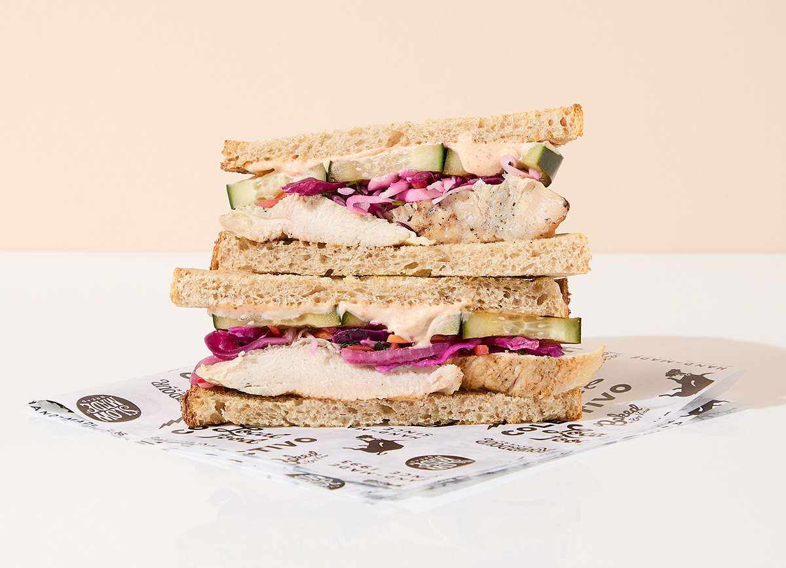

Juicy Juppie Jam Sandwich

This simple but delicious recipe is so versatile. We can eat it for breakfast, lunch, dinner, or for an afternoon snack! With easy to find fresh local ingredients, this recipe is easy for someone wanting to make something quick or can easily be elevated with substituting the protein for different ingredients. This is a good go-to sandwich to make if you have someone coming over with dietary restrictions. Sure to please any picky guests!
Sandwich Ingredients: Serves 4
- 1 medium sized Flute Loaf
- 4 medium sized Purple Juppies
- 230 grams Big Beefy Cheese- Can be substituted for Cheese Nana if Vegan
- 1 lb of Chicken Leg Suprise- Can be substituted for 1 lb of Flotato if Vegetarian
- 200 grams of Glowing Lettuce Head
- 1 teaspoon Sprinkling of Black Pepper
- 1 teaspoon Sprinkling of Salt
Sandwich Assembly Directions:
- Start with slicing the Flute Loaf in half long-ways. It is optional if you want to toast it, but if you do, put it in the oven face up for 1 minute on broil because nobody wants to wait for the oven to preheat.
- While the loaf is probably on fire in the oven, let's make Juppie Jam from the Purple Juppies. Once you have washed, cored, and cubed your Juppies, put them in a metal bowl and cover it with a cloth and set it outside for 5 minutes.
- If you didn't set your Flute Loaf on fire by forgetting it in the oven, take it out now. Go grab the Purple Juppies from outside. Now it's time to smash the Juppies to a jam-like texture by wrapping them in a kitchen towel and jumping on them. This usually takes about 95 minutes. It is important to remember to take a rest every 20 minutes of jumping or you may not make it to the end of the recipe.
- Now you have the Purple Juppie Jam, slather the Jam onto the toasted Flute Loaf, set aside.
- Wash your Glowing Lettuce Head by taping it to a wooden post outside preferably, we recommend you use a gas powered power washer to make sure you really get it clean. If you skip this step, you may end up finding some Wriggling Grubs in your sandwich. Now THAT would be embarrassing.
- Now chop the clean Glowing Lettuce head into tiny little pieces and evenly distribute it on one side of the loaf.
- Cheese time! Get your Big Beefy Cheese out of the fridge and slice enough to cover one side of the loaf and place it on top of the Glowing Lettuce Head.
- All that is left is the Chicken Leg Suprise. Just slice it how you want it and slap it on there.
- Sprinkle the Sprinkling of Black Pepper and Salt and close that sandwich up. Time to dive in!